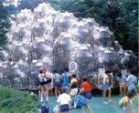

呂清夫 撰文

博物館至少可分為三種︰藝術博物館、歷史博物館、自然博物館，但不論哪一種，博物館的靈魂應在「博物」本身。以藝術品而言，泰半的雕刻品在歷史上本來就存放於綠地、廣場、大廳等開放空間，所以博物館的展示如能還給它以綠地，勢將如魚得水。這種博物館又可分成美術公園、戶外展示、藝術村等不同形式。本文係以箱根雕刻之森美術館、台北中山美術公園、尼加拉瓜瀑布附近的藝術村（Art Park）為例，來討論藝術博物館的多樣性與前瞻性。並以巴黎龐畢度文化中心的新博物館類型，來思考博物館外的世界與博物館同其重要的觀念。●先有「博物」才有館時代在變，潮流在變，博物館的概念也在變。但在台灣似乎有點「處變不驚」，所以一談到博物館就先想到蓋「大廟」，蓋了以後合不合用常未評估，動輒先蓋再說。愚意以為，博物館要以一種具體語言的「博物」來跟觀眾對話，所以應該先有「博物」才有館，但是台灣往往倒因為果，以致大興土木之後，常要關蚊子。博物館應是一種舶來品，國外多是有了「博物」之後，才去找「殼」，而且管道可真多，如寺廟、宮廷、古堡、修道院、歷史遺址的改建都可以使用，而且更為典雅，羅浮宮便是一個典型的例子，新建不過是諸多方法中的最後一種而已。所以我們的「博物館法」如要立法，我的第一個建議是，要設立博物館就要先看擁有多少「博物」，沒有「博物」，一切免談！我希望不要利用硬體的新建，來解決傳統的阿房宮情結或空地恐懼症。空地好好的，為什麼一定要堆上水泥？其實空地有時反而是展示「博物」的最佳場所。博物館最少可分為三種︰藝術博物館、歷史博物館、自然博物館，它們都可以在空地來展示，如美術公園、藝術村、考古學公園、動物園、植物園、生態公園、國家公園……等是，而且都可能比室內更為生動、自然。至於在某些「博物」來講，不論博物館的展示、研究、甚至收藏，都以戶外為佳，動植物園就是最好的例子。以藝術品而言，泰半的雕刻品本來就存放於綠地、廣場、大廳等開放空間，所以博物館的展示如能還給它以綠地，勢將如魚得水，效果絕佳，笨重的建築有時反而是累贅。這又可分成美術公園、戶外展示、藝術村等不同形式。美術公園在台灣多以雕刻公園形式出現，多年前就由謝東閔先生開始提倡，但是至今仍未看到什麼結果，民間倒是比較積極，如北部的達樂花園､南投的牛耳雕刻公園等是。國外的情況則非常普遍，如美國華盛頓特區的赫胥宏（Hirshhorn）雕刻公園、挪威奧斯陸的威吉藍（Vigeland）雕刻公園，都是其中的佼佼者。●美術館以天地為廬日本箱根也有「雕刻之森美術館」，他們把雕刻品收藏、展示於群山環抱、森林蓊鬱的綠野之中，因之也替那些藝術品錦上添花。不過即使有好山好水，如果沒有好作品也是枉然，台灣風景秀麗之處不知凡幾，但是雕刻公園的作品多半僅限於國人之作，有的甚至只有一人之作，所以欠缺號召力，有時藝術品反而不如青山來得秀麗。雕刻之森收藏的作品就不是這樣，有些作品還可以讓小孩鑽進去玩（見上圖），他們收藏的對象遍及全世界，而且都挑第一流的現代藝術來收藏。這在當初自然要付出很高的費用，但是到了後來，由於作品的增值，證實他們當初的投資是相當有遠見的。但是這個投資並非只花錢而已，其實花費更多的是時間，因為他們收藏的作品沒有一件是來自畫商的推銷，而是全部來自藝術家､美術館､智囊團的推薦，其間首先要看作品是否屬於現代雕刻史上的關鍵之作。即使是著名的藝術家，也不能隨便找一件他的作品充數，因為著名藝術家也難免有敗筆之作。箱根是個溫泉地帶，類似陽明山，並有登山鐵道，類似阿里山。坐登山火車，欣賞沿途風景，本來就非常享受。所以當初大家在開發這塊地方的時候，業主日本產經新聞社的人都只想到開設溫泉旅館､假日別墅之類。不過，該社社長鹿內信隆卻獨排眾議，主張開設美術館，他認為報館資源取之於社會，也應該用之於社會，開設美術館不過是稍盡回饋的棉薄之力而已，但是沒有想到，無心插柳柳成蔭，竟獲得了觀眾的廣大迴響，除了票房亮麗之外，當初收藏的藝術品，也漲價了好幾倍，連車站都沾了很多光。那裡原來有個小站叫做「二平驛」，但因旅客很少，曾有廢站之議，沒想到雕刻之森成立以後，旅客絡繹不絕，車站一下子變成了搖錢樹，於是乾脆改名叫做「雕刻之森驛」。雕刻之森開館伊始，也有人擔心，某些裸體雕像是否會被亂塗一通，可是開館多年，卻從未發生這種事，不僅如此，也從未看過牆壁被人塗鴉，或亂丟紙屑果皮煙蒂，他們分析，主要可能因為園區內煙灰缸､垃圾桶的配置適中，他們又努力把園區維持得一塵不染，於是大家捨不得把它弄髒，所以他們說，只要環境乾淨，人類是性善的；同樣的，只要作品出色，民眾是風雅的。●擁抱自然的露天展示關於藝術品的戶外展示，全世界都有各種的嘗試。如法國詩人J.皮葉爾便在法、義邊界的布朗峰（Mont Blanc）策劃過「雕刻譜成的山頂之詩」，它不想用文字，卻用雕刻去創作一首詩，展示場居然位於海拔4810公尺的阿爾卑斯山中。這個詩篇從四個紀念碑似的大門開始，通過四條山間小路而展開。四個門也都是名家之作，即藍門、空間門、太陽門、水門，山間小路上則散置二十多個藝術家的四十件超大型雕刻。作品雖與自然構成對比，卻從另一個角度謳歌了自然。由於作品太大，幾乎所有作品都要利用大型直升機來搬運。當初為了響應詩人尖端的構想，不論藝術家、文化部、環保署、各財團、地方自治體、橫跨兩國的當地民眾莫不總動員。所以有的學者便提到，雖然地處三不管地帶，但因大家對於「風景」這種人類共有財產的尊重，異國民眾也被有志一同的文明意識所驅策，遂能共襄盛舉。在1998年的台北，中山美術公園也在市立美術館的努力之下，將國際知名的二十八件現代美術史上之名作搬來展出兩個月，並稱之為「雕塑之野」。這批作品先前曾在巴黎、東京、魯森堡、海牙等地巡迴展出過，之後的千禧年還要搬到紐約展出。1996年在巴黎展出時是放在香榭大道上，那是跟美術公園大不相同的空間，但似乎只要是開放空間，似乎都能把這些作品襯托得很好，有些作品擺在美術公園似乎比香榭大道更好看。這些作品有台座的不到三分之一，故多半沒有傳統的台座，因之，可以說直接落地而有「生根」之感，作品已跟空間水乳交融，並賦予空間以全新的內涵。在台北的展出本以為中山美術公園太過複雜，會使展示品難以招架，但是最後的展現還是非常調和，而且配置疏密有致，使整個公園顯得更為生動，毫無侷促擁擠之感。當初這批展品雖然數目不算很多，卻包含了相當豐富的「品種」，如印象派、立體派、機械派、幾何造形、有機造形、機動藝術、集錦藝術、普普藝術等是。但在作品的展示配置上，則不依派別或時代去安排，卻完全依據地形特色安置相稱的作品，情況有點像雕刻之森。我們只要看看園中的一條南北幹道，便可窺見一斑。其中最醒目的作品首推普普傾向的「大拇指」（塞撒作），從南邊入口老遠就可以看到，由於地勢最高，四周又很空曠，所以比巴黎展出時放在門口的效果還要好。從這裡往北一瞧，馬上可以看到米羅的小可愛作品，再往北走不遠就可看到機動藝術的「風力雷達」（塔奇斯作），由於作品高達750公分，而且能夠隨風擺動，所以相當引人注意。再往北走，馬上可以碰到立體派的「先知」（卡嘉羅作），一手持拐杖、一手指著天，由於地處綠色圓環，旁有叉路，頗有向人指點迷津之慨，故也比巴黎展出時放在牆邊的效果要好。繞過圓環再往北走上天橋，便可看到天橋下的藍色水池中，有一隻長春藤構成的「恐龍」（拉蘭納夫婦作）在噴水，這比巴黎展出時放在草地上噴水更加生動得多。這對夫妻檔平日作品均有實用性，如書桌、吧台、浴缸都取不同動物之形，而「恐龍」則是噴水池的噴水口，所以位置選得頗好。這批可以說把原來顏色複雜（有粉紅、湛藍、翠綠等）、結構多樣的公園之不利於展示的要素作了有利的運用。●柳暗花明藝術村作為博物館，不論藝術的、歷史的、科學的性質，展示時都有必要顧及美學的、心裡學的、科學的要素，並使觀眾能夠寓教於樂。「雕塑之野」也因此而十分成功，可惜當展期結束、作品搬走之後，整個公園馬上顯得寂寞、單調、甚至荒涼。實在有待於補上另一批作品，即使不是那麼有名的作品也行。因為博物館的主要活動便是運用其特有「語言」與觀眾對話，這時如果不作藏品的常設展出，便要舉辦臨時性的展覽，作為美術公園（Taipei Art Park）而空無作品便會讓大家覺得人去樓空。關於藝術博物館中的藝術村可以說是綜合性的空間，國內近年也有南投九九峰藝術村的計畫，經費預算也已經通過，不過由於交通不便、軟體設計不足、藝壇意見太多，將來發展如何仍待觀察。倒是立法院的決定還有點概念，也就是規定軟體規劃尚未規劃完成之前，不得擅建硬體。在國外，藝術村早已相當普遍，有的雖然掛名美術公園，其實是藝術村的內涵，因為它們不僅展示作品，同時也讓藝術家進駐，從事創作，並讓觀眾觀賞其創作過程。在美國紐約州尼加拉瓜瀑布附近便有一個藝術村，地處尼加拉瓜河岸的廣大台地上，管理與經營分別是國有財產局、紐約州公園休閒辦事處。如果尼加拉瓜瀑布是天然的觀光資源，那麼藝術村則是藝術的觀光資源。這個藝術村佔地200英畝，到處安置有藝術作品，但以新人之作為多。每年都會邀請藝術家在園區各地創作戶外藝術（包括錄影藝術、雷射藝術等），每次邀請十數人至四十人不等。另外並有駐園藝術家的制度，讓藝術家在此停留二、三星期，從事藝術創作，其工作室是開放的，隨時可供人參觀，有時也可以讓人直接購藏藝術品。藝術品種類很多，也包括陶藝、玩偶等工藝品。園區內的主要設施有可以容納四千人的大劇場（室內兩千五百，室外一千五百人），並有木造的綜合設施，它們包括上述的藝術家工作室、簡單的表演空間、休憩所、簡餐店、藝品店，及兩間木材、玻璃的加工場，內部有各種工作機械，方便於藝術家的創作及設施的修理。此外尚有幾間小型工作室供藝術家使用。不過這些設施除了大劇場之外，多半是木造的簡單建築，取其手工製作的人性化，以便營造親切感的氣氛。距離主要設施稍遠的森林之中，尚有說書場、小劇場、圓形劇場、野餐空間。活動內容還包括古典音樂、歌劇、舞蹈、爵士樂、表演、視覺藝術的展演。其中的表演竟也包括健康飲食的講習會，可以想見，他們相當重視享受生活、享受休閒。這個藝術村只有夏天開放，所以不論藝術家或遊客來此，也都不無避暑的性質，但也因此把美術公園那種殿堂式的莊嚴氣氛弄得非常輕鬆，藝術生活化、生活藝術化，這裡應是最好的寫照。●博物館外的世界比博物館內更重要打破藝術與生活界線的想法可說是當代藝術的重要傾向，那是七十年代以後文化思考的急轉彎。在六十年代，法國有教育問題衍生的五月革命、在美國有越戰衍生的學生運動、登陸月球衍生的環保運動等等，文化上也一反過去的思考方向，邁入反文化、反藝術的傾向、走向草根文化、高度參與性的DIY文化。因之，美國藝術家A.卡普洛會說，街頭巷尾就是最好的美術館，太空人與太空中心的對話是最好的現代詩，家庭主婦在超級市場三心兩意的步伐則是最美的現代舞。至於巴黎龐畢度文化中心的思考可以說是一種「反博物館」，那些室內管線完全暴露在外不妨說是建築的內衣外穿，那些整個透明化的電動扶梯也宣告了博物館外的世界比博物館內更有看頭、更為重要，人到博物館重要的是要從這裡去看巴黎，博物館也者，正在日新又新。圖說：日本箱根雕塑公園中的「雕塑」